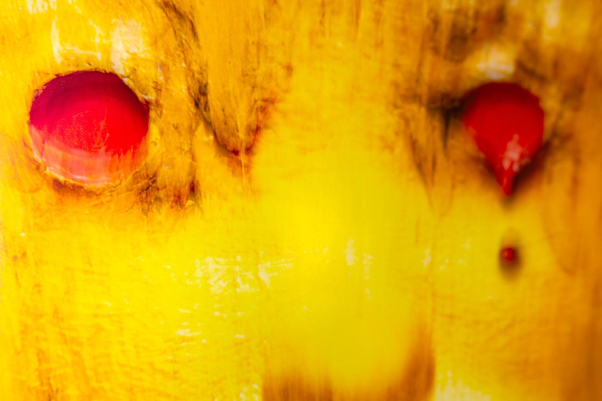
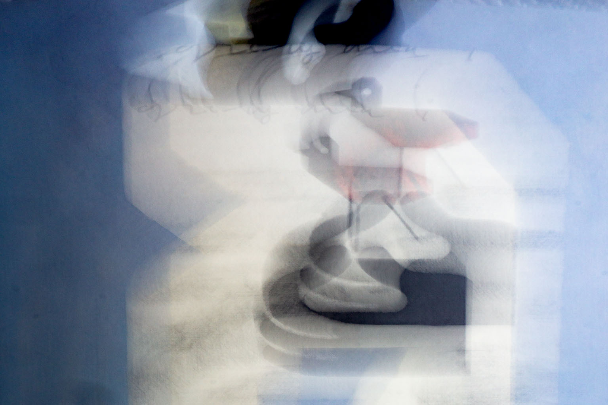
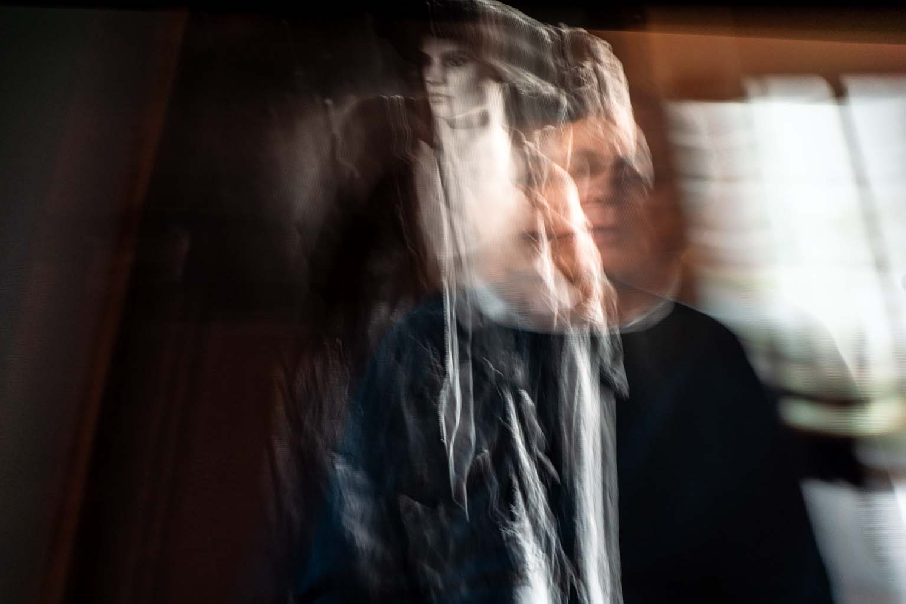
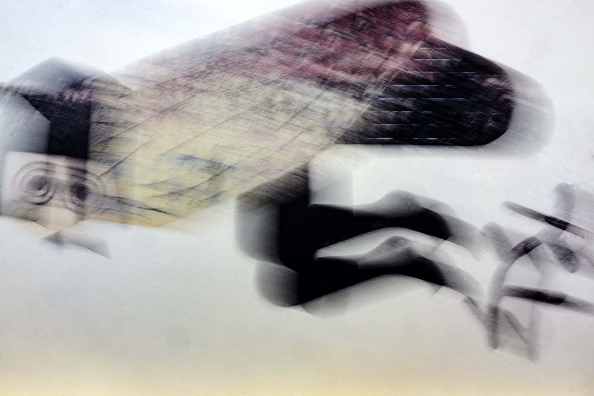
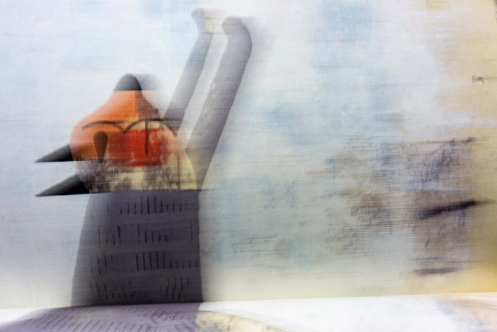
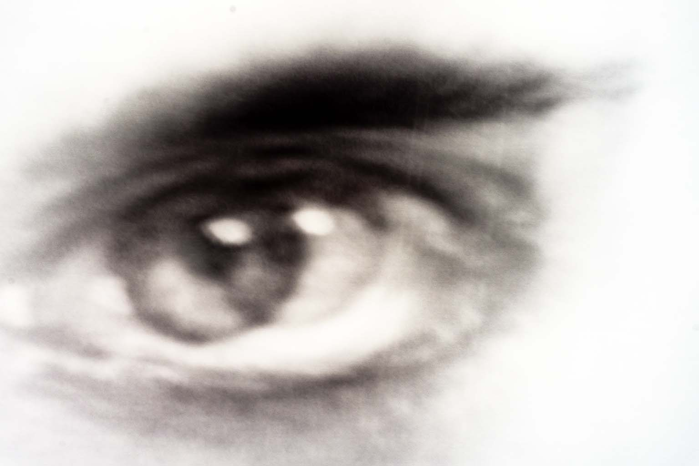

El arte contemporáneo suele ponerse estupendo. Le chifla refugiarse en la solemnidad y tirar de discursos largos para maquillar lo obvio: que la vida es incómoda y los martes pesan.
El Proyecto Buld de Daniel Remeseiro hace todo lo contrario. Pasa de la teoría y va directo al barro: realismo sucio, el cansancio de la rutina y esa gimnasia diaria de sobrevivir por casa sin hacer mucho ruido.
Las siete piezas del libro no están para dar lecciones. Chocan de frente. Por un lado, está el poema hurgando en el madrugón, el desgarro de los días laborables y el pulso torcido de las mañanas de octubre. Por el otro, la cámara fotografía sin maquillaje: manchas de color, texturas de asfalto y esquinas gastadas que sirven como un escudo mecánico frente al ruido de fuera.
Remeseiro baja al artista del pedestal. Aquí no hay iluminación divina ni historias raras. Todo se reduce a lo básico: encuadrar la calle a través del objetivo de la cámara para demostrar que seguimos vivos por pura cabezonería.
- I. LA CÁMARA Pág. 1
- II. IDEAS Pág. 4
- III. LA INFANCIA Pág. 7
- IV. MIRAR ADENTRO Pág. 10
- V. MI RAZÓN Pág. 13
- VI. VENENO Pág. 16
La cámara fotográfica
satisface nuestra ansia
de captar lo imposible.
Si no miras, olvidas.
El visor marca la existencia.
Todo entra y sale a nuestra voluntad.
Encuentra una imagen en la que refugiarte.
Retírate al pensamiento.
El visor marca la existencia.

No hay magia en congelar un instante; hay una pura necesidad de buscar una trinchera cómoda. La imagen funciona como un refugio de quita y pon donde retirarse cuando el pensamiento aprieta más de la cuenta.
| TÍTULO DE LA OBRA | PROYECTO BULD · LA CÁMARA |
| ESTRUCTURA | Obra poético-visual compuesta por texto y Fotografía de Abstracción |
| CAPTURA Y ÓPTICA | SONY ILCE-6000 (16-50 mm) |
| TÉCNICA FOTOGRÁFICA | Fotografía digital de abstracción por movimiento intencional de cámara |
| SOPORTE & PAPEL | Impresión Giclée sobre papel de algodón de alta durabilidad |
| UBICACIÓN & AÑO | A Coruña, Galicia 2026 |
Ideas con carcasa,
en laberinto.
Bosquejar una idea.
Por ahora no dispares.
Nadie se acerca
con la intención de abrazarme.
Nadie se acerca con la intención de abrazarme.

Al final, la desconfianza del entorno enseña a ir con la coraza puesta. Si nadie se aproxima a la intemperie con ánimos de ofrecer cobijo, lo más sensato es mantener las ideas protegidas hasta que sepan defenderse solas en la calle.
| TÍTULO DE LA OBRA | PROYECTO BULD · IDEAS |
| ESTRUCTURA | Obra poético-visual compuesta por texto y Fotografía Documental Urbana |
| CAPTURA Y ÓPTICA | SONY ILCE-6000 (16-50 mm) |
| TÉCNICA FOTOGRÁFICA | Fotografía digital documental urbana de registro directo |
| SOPORTE & PAPEL | Impresión Giclée sobre papel de algodón de alta durabilidad |
| UBICACIÓN & AÑO | A Coruña, Galicia 2026 |
La casa de la infancia está cerrada.
El cielo no tiene hélices.
El miedo hace ruido,
pero ya no es asunto tuyo.
A veces somos como un animal doméstico
comiendo en su plato.
En la trastienda de aquello
solo queda lo que se puede inundar.
solo queda lo que se puede inundar.

Hay una calma cómoda en la rutina doméstica, como la del animal que se sabe a salvo frente a su plato. Y si en la trastienda de los recuerdos entra el agua de vez en cuando, tampoco pasa nada. El agua limpia el polvo, se lleva lo viejo y deja espacio para lo que viene. La infancia no es una trampa; es solo el sitio del que salimos caminando por nuestro propio pie.
| TÍTULO DE LA OBRA | PROYECTO BULD · LA INFANCIA |
| ESTRUCTURA | Obra poético-visual compuesta por texto y Fotografía Documental Urbana |
| CAPTURA Y ÓPTICA | SONY ILCE-6000 (16-50 mm) |
| TÉCNICA FOTOGRÁFICA | Fotografía digital documental de registro directo y luz de ambiente |
| SOPORTE & PAPEL | Impresión Giclée sobre papel de algodón de alta durabilidad |
| UBICACIÓN & AÑO | A Coruña, Galicia 2026 |
Mi espíritu se levanta antes que yo.
Para localizarlo
tengo que utilizar los ojos de mi memoria,
que son más prácticos.
Así lo localizo
siempre que quiero.
que son más prácticos.

Los ojos de la memoria no están para ponerse nostálgicos, sino para dar con lo que se ha traspapelado entre el ruido del día a día. Saber exactamente dónde buscarse cuando la rutina aprieta es la forma más elemental de no perder el rumbo.
| TÍTULO DE LA OBRA | PROYECTO BULD · MIRAR ADENTRO |
| ESTRUCTURA | Obra poético-visual compuesta por texto y Fotografía Documental Urbana |
| CAPTURA Y ÓPTICA | SONY ILCE-6000 (16-50 mm) |
| TÉCNICA FOTOGRÁFICA | Fotografía digital documental de registro directo y luz de ambiente |
| SOPORTE & PAPEL | Impresión Giclée sobre papel de algodón de alta durabilidad |
| UBICACIÓN & AÑO | A Coruña, Galicia 2026 |
No exagero nada, hago todo lo contrario.
Rebuscar en los hechos encontrados,
falsos fondos para la conciencia.
Permanezco mudo y callado.
Dije cosas que había olvidado.
O no, al contrario:
recordé lo que nunca llegué a decir.
Y le presté a mi razón
un par de monedas.
O no, al contrario:
recordé lo que nunca llegué a decir.

La vida cotidiana no se sostiene con verdades absolutas, sino con pequeños apaños y transacciones de andar por casa. Prestarle unas monedas a la razón es la metáfora justa de esa supervivencia íntima: pagar el peaje del día a día para poder seguir caminando sin mirar demasiado hondo en el espejo.
| TÍTULO DE LA OBRA | PROYECTO BULD · MI RAZÓN |
| ESTRUCTURA | Obra poético-visual compuesta por texto y Fotografía de Abstracción Pictórica |
| CAPTURA Y ÓPTICA | SONY ILCE-6000 (16-50 mm) |
| TÉCNICA FOTOGRÁFICA | Fotografía digital de abstracción por movimiento intencional de cámara y superposición de capas etéreas |
| SOPORTE & PAPEL | Impresión Giclée sobre papel de algodón de alta durabilidad |
| UBICACIÓN & AÑO | A Coruña, Galicia 2026 |
Veneno particular.
A la maldad le gusta el mal humor.
¿Quién empieza el momento:
el que mira o lo que se mira?
Estamos en octubre.
Esto no es el resultado de un problema.
el que mira o lo que se mira?

No hay que buscar explicaciones complicadas ni culpar a un gran problema de fondo. Las cosas son como son. Mirar de frente la rutina sin adornos es el primer paso para no dejar que el amargor del entorno termine comiéndote el terreno.
| TÍTULO DE LA OBRA | PROYECTO BULD · VENENO |
| ESTRUCTURA | Obra poético-visual compuesta por texto y Fotografía Documental Urbana |
| CAPTURA Y ÓPTICA | SONY ILCE-6000 (16-50 mm) |
| TÉCNICA FOTOGRÁFICA | Fotografía digital documental de registro directo y luz de ambiente |
| SOPORTE & PAPEL | Impresión Giclée sobre papel de algodón de alta durabilidad |
| UBICACIÓN & AÑO | A Coruña, Galicia 2026 |